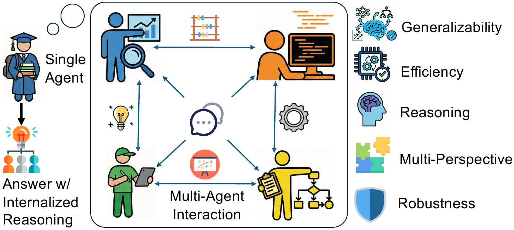
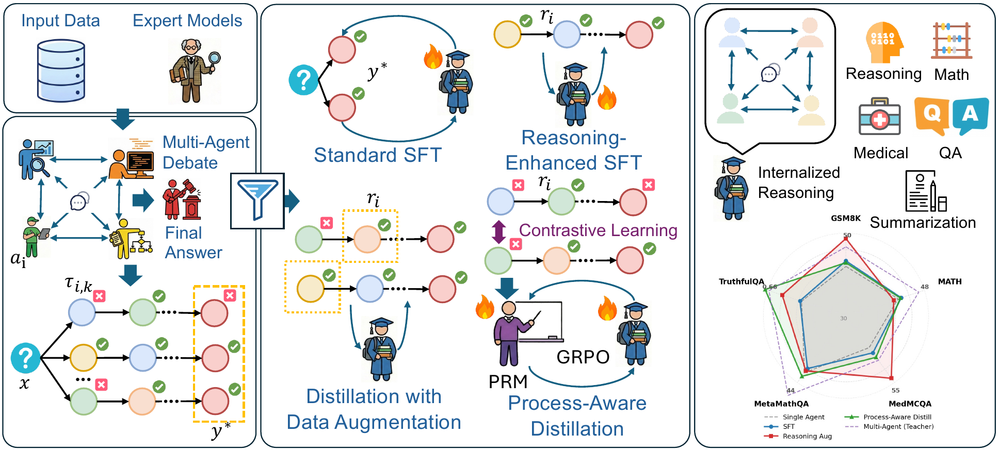
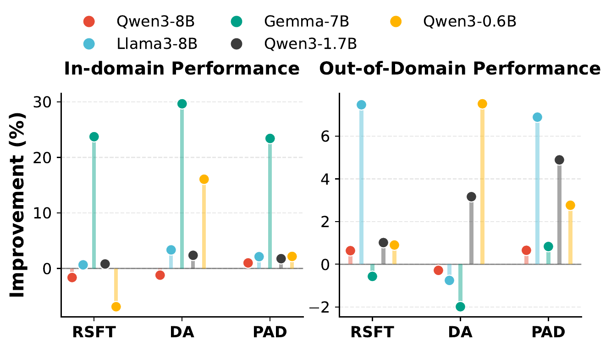
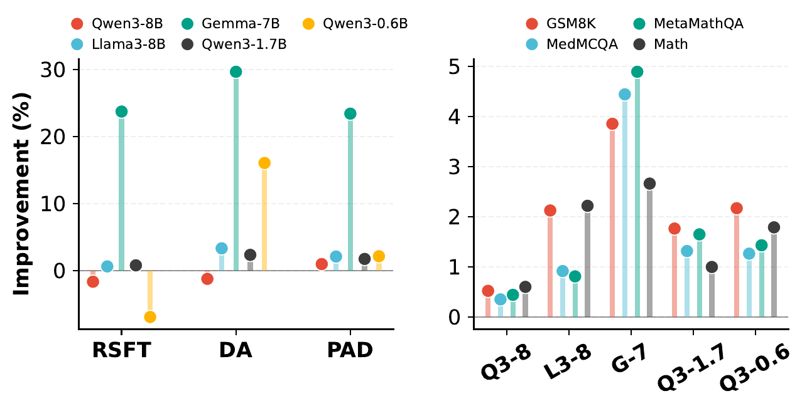
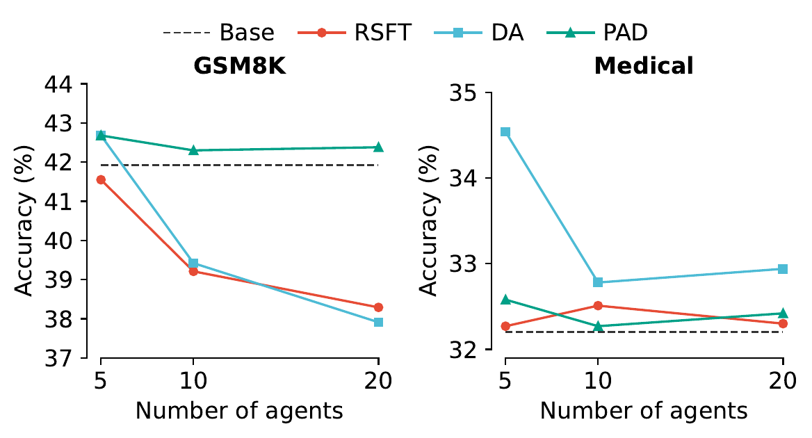
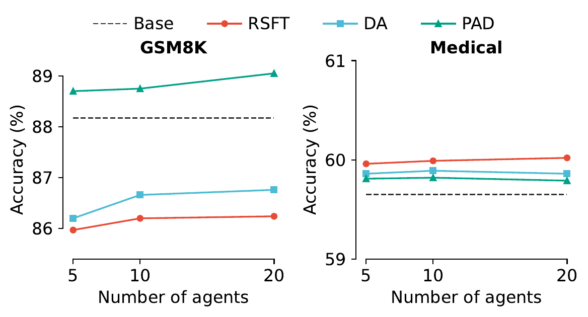
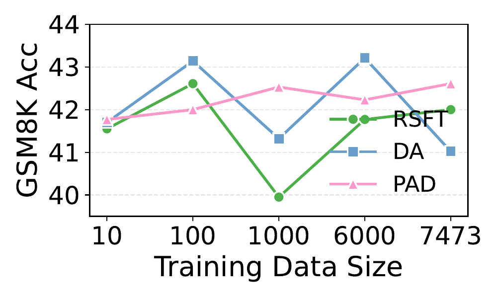
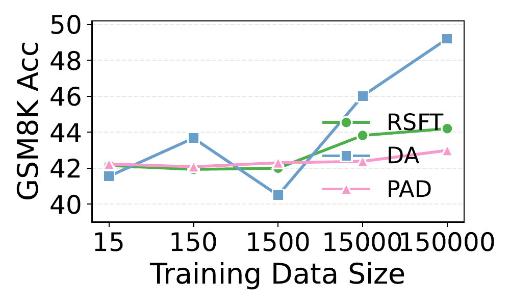
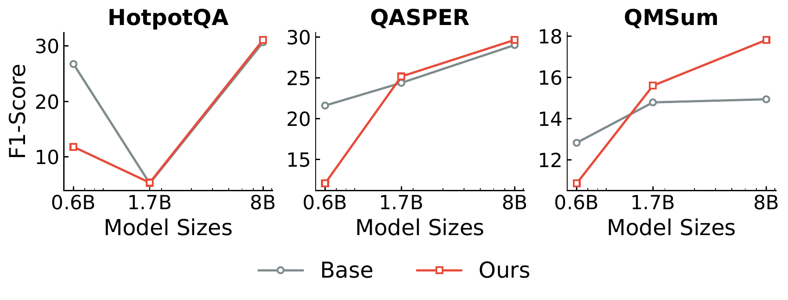
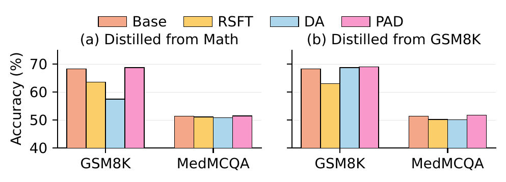

While large language model (LLM) multi-agent systems achieve superior reasoning performance through iterative debate, practical deployment is limited by their high computational cost and error propagation. This paper proposes AgentArk, a novel framework to distill multi-agent dynamics into the weights of a single model, effectively transforming explicit test-time interactions into implicit model capabilities. This equips a single agent with the intelligence of multi-agent systems while remaining computationally efficient. Specifically, we investigate three hierarchical distillation strategies across various models, tasks, scaling, and scenarios: reasoning-enhanced fine-tuning; trajectory-based augmentation; and process-aware distillation. By shifting the burden of computation from inference to training, the distilled models preserve the efficiency of one agent while exhibiting strong reasoning and self-correction performance of multiple agents. They further demonstrate enhanced robustness and generalization across diverse reasoning tasks. We hope this work can shed light on future research on efficient and robust multi-agent development. Our code is at github.com/AIFrontierLab/AgentArk.
Multi-agent debate produces strong reasoning but is slow and brittle. AgentArk compresses the dynamics of an agent ensemble into the weights of one model — preserving the collective behavior at single-agent inference cost.

AgentArk distills the reasoning capability of a multi-agent system into a single agent, so that one unit imitates the collective thinking process with boosted performance and a fraction of the inference cost.
To our knowledge, the first comprehensive framework that explores and compares multiple strategies for distilling multi-agent reasoning into a single model.
A reusable data-generation and distillation pipeline that is agnostic to the underlying MAS algorithm, enabling research on any interaction protocol.
120 experiments across Qwen3, Gemma 3, and Llama 3 families, covering math, medical QA, long-form QA, scaling, robustness, and multimodal transfer.
Three stages: multi-agent debate → knowledge extraction → hierarchical distillation.

The pipeline proceeds through (1) multi-agent debate that produces diverse reasoning trajectories, (2) knowledge extraction that filters corrective traces with a high-capacity verifier (Qwen2.5-72B), and (3) three distillation routes: reasoning-enhanced SFT, trajectory-based data augmentation, and process-aware distillation with a PRM and GRPO.
Supervise the student on both the final consensus answer and the reasoning trace that produced it. A reasoning loss trains coherent intermediate rationales, while an answer loss grounds the final prediction in those rationales.
For every problem, extract multiple answer-consistent but structurally diverse reasoning chains from the debate log. The student learns several valid paths to the same answer, improving robustness and generalization.
Train a Process Reward Model with a contrastive step-level objective, then fine-tune the student with Group Relative Policy Optimization. This internalizes the dialectical critique-and-revision behavior of multi-agent debate within a single forward pass.
Distilling Qwen3-32B into smaller students across GSM8K, MATH, MetaMathQA, and MedMCQA, AgentArk lifts single-agent accuracy by +4.8% on average — only marginally below a full multi-agent system, at a small fraction of the inference cost.


R-SFT and DA sometimes help but swing by dataset. PAD's step-level supervision delivers stable gains across settings.
Distilling across families (Qwen → Gemma / Llama) yields larger and more consistent gains than same-family distillation.
Biggest lifts on MetaMathQA and GSM8K; smaller on knowledge-heavy MedMCQA — distillation transfers reasoning, not facts.
All three reasoning-centric distillation methods boost single-agent performance, and combining them yields further gains.
Strong PRMs lift even small students; weak PRMs limit everyone. Scaling teacher agents mostly helps larger students, with diminishing returns on small ones.
Simply adding more trajectories does not improve performance; PAD's high-signal process supervision yields stable, consistent gains.
PAD-distilled models show better step decomposition, intermediate self-checking, and error correction than R-SFT and DA.
Distilled models transfer reliably to unseen reasoning benchmarks (HotpotQA, QASPER, QMSum) and robustness evaluations such as TruthfulQA.
Despite training on text-only reasoning data, the distilled behaviors transfer to Qwen2.5-VL, suggesting modality-agnostic reasoning transfer.
Bigger teacher ensembles mainly help larger students; for smaller ones, high-signal process supervision matters more than raw trajectory count.




Reasoning-token perplexity on held-out GSM8K drops substantially after distillation, indicating more structured chains of thought. An LLM-judge evaluation (InternLM-2.5-20B-Chat) scores models on step decomposition, intermediate verification, error localization, and overall coherence.
PAD preserves explicit multi-step structure, self-checking behavior, and coherent reasoning flows, outperforming the base and both SFT variants.
DA captures surface-level reasoning structure but does not fully inherit reflective self-correction behavior.
Direct reasoning-level supervision alone is insufficient — it improves fluency but not the dialectical dynamics of MAS.
Students trained only on GSM8K transfer to HotpotQA (multi-hop QA), QASPER (long-context understanding), and QMSum (summarization) — tasks far from the training distribution.

F1 on three open-ended OOD benchmarks. AgentArk boosts cross-domain reasoning transfer, especially for larger students — distillation strengthens general reasoning rather than fitting dataset patterns.
On TruthfulQA, all three distillation variants improve factual robustness over the base student, with PAD ranking highest — evidence that MAS distillation transfers reasoning behavior, not surface alignment.
Although training data is entirely text, distilling Qwen2.5-VL-32B-Instruct into Qwen2.5-VL-3B-Instruct via the same pipeline still improves multimodal reasoning. PAD remains the strongest or near-strongest across benchmarks, suggesting AgentArk captures modality-agnostic reasoning patterns.

Multimodal distillation on Math-derived and GSM8K-derived data, evaluated on Qwen2.5-VL-3B-Instruct. Gains are smaller than in text-only settings, as expected, but consistent.
@article{luo2026agentark,
title={AgentArk: Distilling Multi-Agent Intelligence into a Single LLM Agent},
author={Luo, Yinyi and Jin, Yiqiao and Yu, Weichen and Zhang, Mengqi and Kumar, Srijan and Li, Xiaoxiao and Xu, Weijie and Chen, Xin and Wang, Jindong},
journal={arXiv preprint arXiv:2602.03955},
year={2026}
}